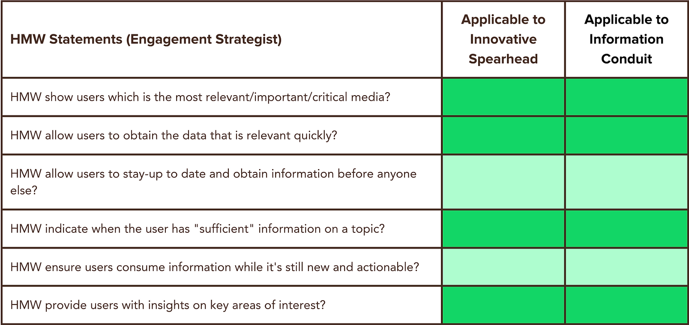
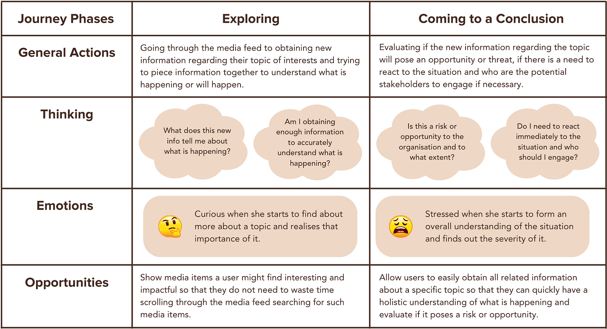
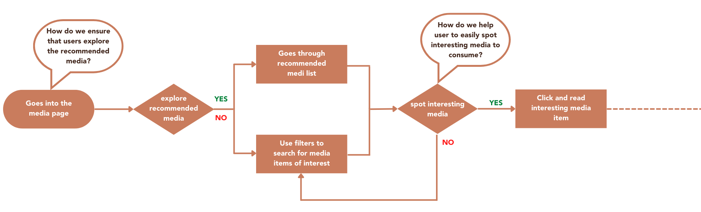
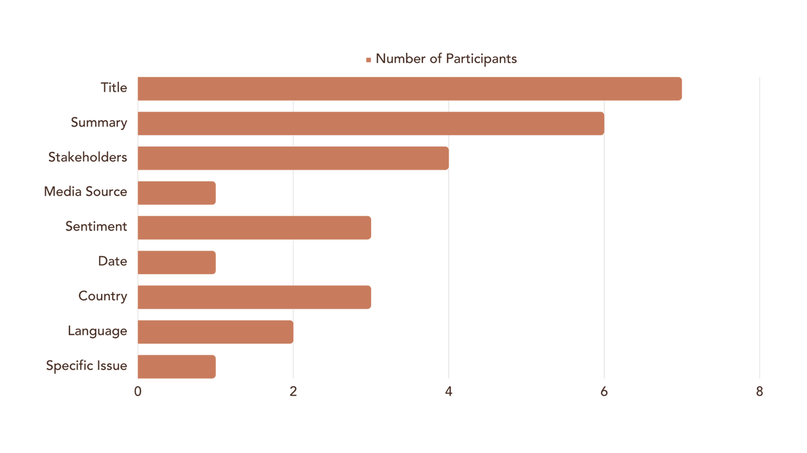
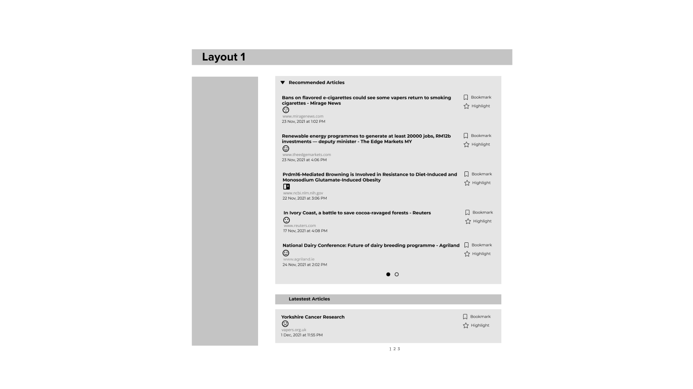
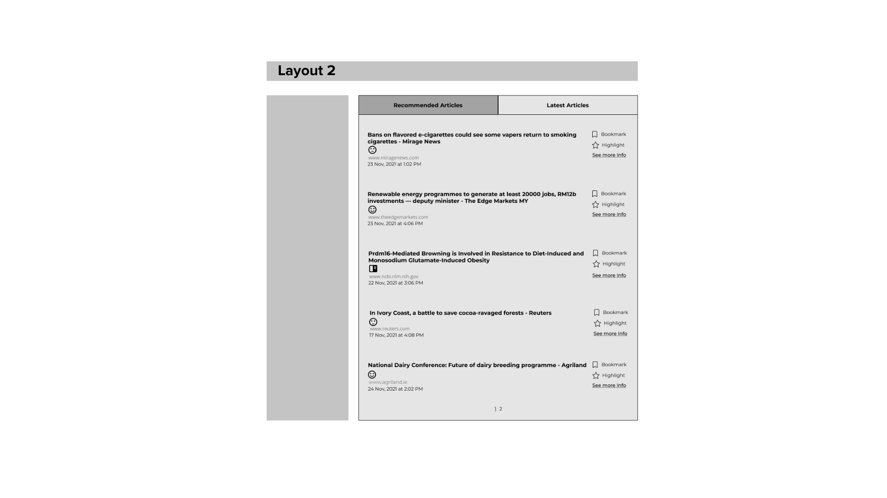
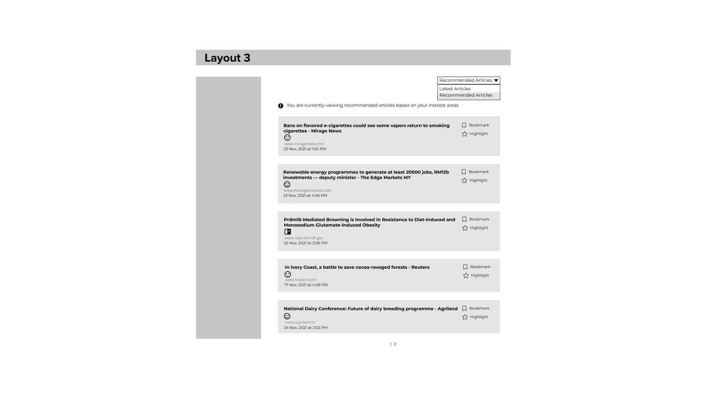
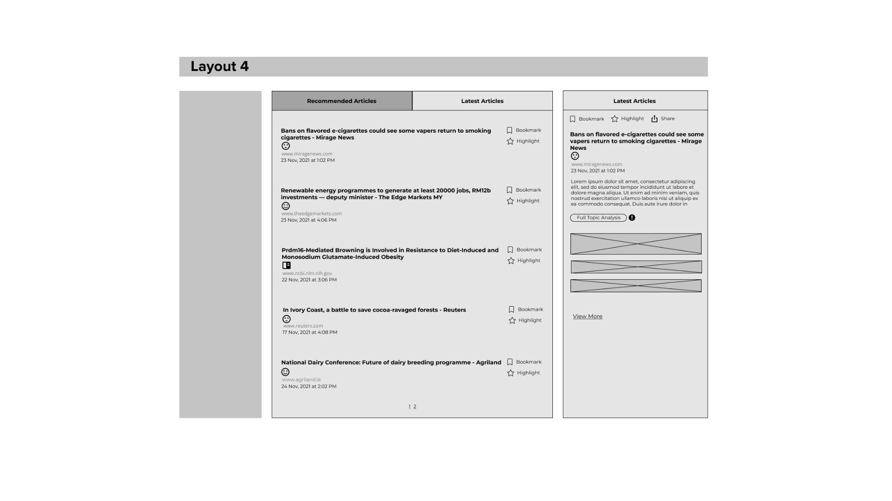
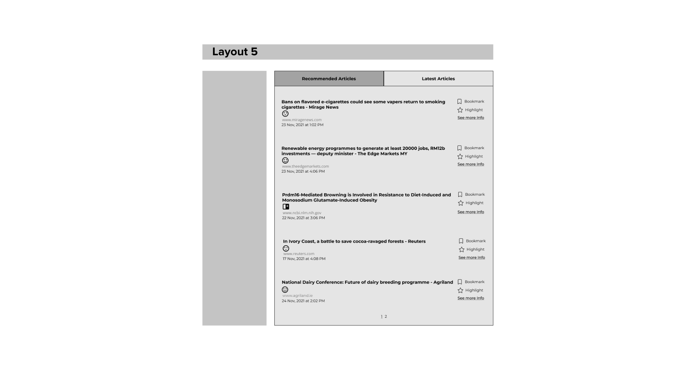
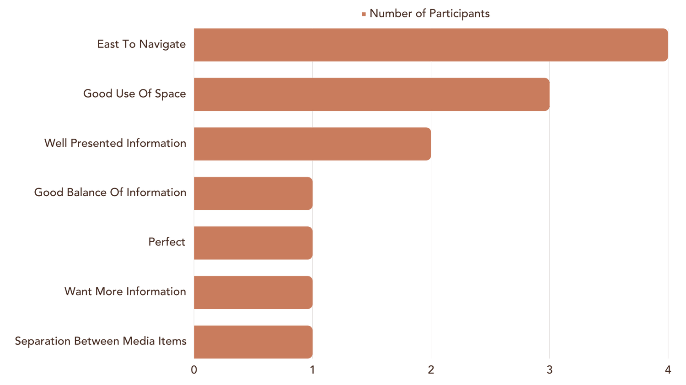

Designing, validating and evaluating an embedding-based media recommendation experience for a complex B2B intelligence platform.
Role
UX Designer — sole designer and researcher
Year
2023
Collaborators
Product managers, developers and a data scientist
Methods
Competitive research, journey analysis, workshops, usability testing and analytics
OVERVIEW
Reducing information overload in a complex media feed.
The product was a complex B2B platform providing stakeholder and media intelligence to professionals working primarily in external-affairs functions.
Its existing media feed presented users with a large amount of information. Some details were important for assessing a news article, while others contributed to a cluttered experience.
THE BRIEF
Improving the media-feed experience.
I was tasked with improving the UX and UI of the media feed and exploring a solution that would provide greater value to the Engagement Strategist, the product’s core persona.
To understand which improvements would provide meaningful value to users, the discovery phase needed to answer four foundational questions.
01
What information on the media feed was important for users to perform their jobs?
02
What friction did users experience while using the media feed?
03
Which pain point of the Engagement Strategist were we trying to solve?
04
Where did the media feed appear in the Engagement Strategist’s journey?
MY ROLE
Leading discovery and validation end to end.
I was the sole UX designer and researcher on the project. I collaborated with the product, software development and data science teams throughout the process.
Conducted competitive research
Defined the problem statement and HMW statements
Analysed the Engagement Strategist’s user journey
Organised and facilitated internal ideation workshops
Planned and conducted validation testing with users
Designed the improved UX and UI of the media feed
COMPETITIVE RESEARCH
Learning how other platforms support media discovery.
I reviewed three media platforms that help users discover, organise and analyse news content.
Inoreader
A content-reading platform with curated feeds.
Shows unread article counts
Suggests topics based on search
Sorts by popular and relevant media
Google News
An aggregator that groups stories and adapts them to user interests.
Curated feeds by interest
Follow topics, locations and sources
Full coverage for broader context
Meltwater
A media-intelligence platform for PR and marketing teams.
Comprehensive search
Editable article sentiment
Publisher reach and social echo
UNDERSTANDING USERS
Three personas, one shared need for relevant information.
ENGAGEMENT STRATEGIST
Respond with clarity and speed.
A proactive government-relations manager who needs relevant, sufficient and timely insights to react appropriately and quickly.
INFORMATION CONDUIT
Stay on top of relevant issues.
A detailed and responsive risk analyst who needs an efficient and comprehensive way to retrieve and distribute information across departments.
INNOVATIVE SPEARHEAD
Identify issues before they escalate.
A forward-thinking and risk-aware international-relations director who needs to formulate well-considered strategies in advance.

HMW statements helped connect shared needs across the three personas.
USER JOURNEY
Finding opportunities within the existing workflow.
I focused on the part of the Engagement Strategist’s journey where users interacted with the media feature. This helped the team understand what users were trying to accomplish, what information supported their decisions and where recommendations might provide value.

The journey analysis guided both ideation workshops.
IDEATION
Organising and facilitating workshops to turn research into feasible product directions.
Workshop 01
Exploring product solutions
I brought the product team together to generate ideas using the user journey, problem statements, HMW statements and competitive research. I guided the team through ideation and voting to shortlist concepts including advanced filters, recommended media and related media.
Workshop 02
Redesigning the feed
I organised a second workshop with developers to explore how we could reduce clutter and improve the media-feed experience. I facilitated voting and discussions around technical feasibility and implementation effort to identify practical design directions.

A high-level user flow supported the second ideation workshop.
HOW THE MODEL WORKED
Content embeddings connected related news with organisational interests.
Media content was converted into text embeddings and positioned by semantic similarity. Related articles formed topic clusters, while organisation-level engagement signals such as clicks, bookmarks, highlights and shares helped infer areas of interest.
Media content→Text embeddings→Semantic similarity→Topic clusters→Engagement signals→Recommendations
USER VALIDATION
Validating the media feed and recommendation experience through three exercises.
I planned and conducted three validation exercises with 7 participants from 5 organisations. The exercises examined how users evaluated articles on the existing media feed, what made recommended media relevant to them, and which prototype provided the best news-consumption experience.
01
EXISTING FEED
Which media indicators help users decide whether an article is worth reading?
Participants were asked to go through the existing media feed and think aloud while deciding which articles they would consume. This helped me identify the media indicators they relied on and determine which information should remain visible or be hidden to reduce clutter.
7 of 7 looked at the title to gauge the topic.
6 of 7 used the summary for additional context.
4 of 7 considered tagged or mentioned stakeholders.
3 of 7 considered whether the media source was trusted.
3 of 7 used sentiment to identify a potential risk or opportunity.

02
RECOMMENDER POC
What makes a recommended media item relevant to users?
Participants were asked to review a set of articles generated by the data science team’s recommender proof of concept. They indicated whether each article was relevant and explained the topics, locations and events that influenced their decisions. Their feedback was shared with the data science team to support further optimisation of the recommender.
Most participants looked for highly specific topics within specific geographies.
2 users also followed specific events, such as protests mentioning their organisation or conversations connected to an industry event.
3 users felt that recommended media would help them consume articles faster.
3 users were concerned that they might miss important media items.
03
PROTOTYPE COMPARISON
Which layout provides the clearest and most intuitive news-consumption experience?
Participants were asked to go through five simple prototypes and think aloud as they reviewed each one. They then selected the layout that provided the best experience for navigating the feed and deciding which media items were worth consuming.

Layout 1

Layout 2 — preferred by participants

Layout 3

Layout 4

Layout 5
All participants preferred Layout 2 because it was clear, easy to navigate and made good use of space.
Some participants still wanted the summary and mentioned stakeholders visible to help them judge whether an article was worth consuming.

Participant feedback on the preferred Layout 2.
FINAL DESIGN & IMPLEMENTATION
Balancing clarity, context and technical feasibility.
I shared the validation insights with the development, product and data-science teams. We discussed the final design, implementation feasibility and optimisation of the recommender before release.
01
Limited behavioural data
Many organisations did not use the media feature frequently or consistently enough to create a reliable interest profile. Sparse clicks, bookmarks, highlights and shares limited recommendation coverage.
Organisation-level aggregation also blended different users’ interests. A frequent user could disproportionately influence recommendations, while less common preferences could be lost.
02
Discoverability constraints
The recommended feed could not become the default view because other platform features redirected users to the media homepage expecting the latest feed.
The switch also had to remain in the filter column because the latest feed supported filters while the recommended feed did not. This reduced the feature’s visibility.
03
Different internal workflows
External users benefited from hiding secondary information, while internal professional-services and data teams needed those details to capture insights and maintain data quality.
I facilitated sessions to align internal use cases and communicate component and permission requirements to development.
MEASURING SUCCESS
Instrumenting the experience for continued learning.
Success metrics were defined and configured in Mixpanel after implementation, including recommended-tab clicks, highlights, bookmarks, shares, the recommended-media conversion funnel and time to conversion.
The reports, alongside targeted survey feedback, were intended to identify opportunities for the next iteration.
WHAT WE LEARNED AFTER LAUNCH
The feature provided value once discovered, but adoption remained limited.
I proposed a targeted survey on the media page so users could provide feedback within the context of their experience. I reviewed the survey responses alongside product analytics to understand feature discovery, recommendation coverage and conversion behaviour.
Low feature awareness
Some users said they did not know the recommended-media feature existed, despite new features being announced through newsletters and in-app communications. Together with the relatively low number of clicks, this suggested that the existing announcements were not sufficient to drive awareness and that the feature needed greater visibility within the media experience itself.
Insufficient recommended content
Some users felt there was not enough recommended media available. This reflected the limitations of relying on organisation-level behavioural data, which was not always sufficient or consistent enough to generate a broader set of recommendations.
Value after discovery
Although relatively few users entered the recommended feed, those who did moved through the conversion funnel quickly. This suggested that the experience could provide value once discovered, but its impact was constrained by limited visibility and recommendation coverage.
REFLECTION
A good recommendation experience requires more than a good interface.
This project taught me that designing a recommendation experience involves more than improving the presentation of content. Its success also depends on having sufficient behavioural data, producing useful recommendations and making the feature easy to discover.
It also reinforced the importance of collaborating closely with product, software development and data science teams. User needs, recommendation quality and technical constraints had to be considered together throughout the project.